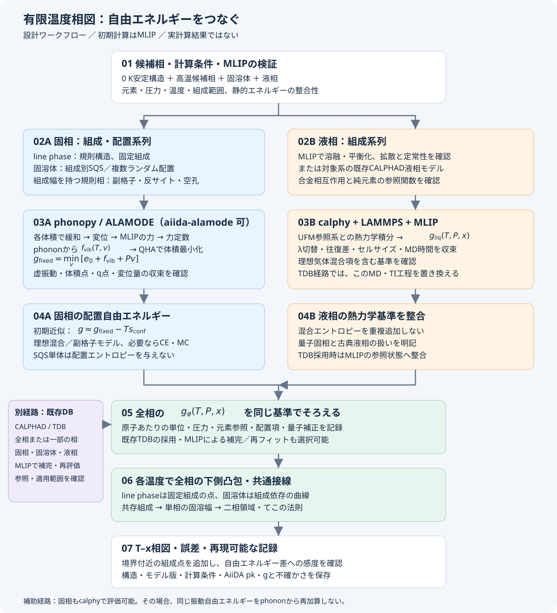

0 Kの結晶構造から
固溶幅・液相を含む有限温度相図へ
初期計算はMLIPを使用。固相の振動自由エネルギーをaiida-alamode、液相をcalphyまたは既存CALPHADモデルで評価し、配置統計を整合させて相平衡を求めます。対象系の既存CALPHADデータベース（TDB）が利用できる場合は、全相または一部の相の自由エネルギーモデルとして採用する経路も選べます。
計算設計・未実行 二元系 A₁₋ₓBₓ・固定圧力作成日：2026-10-20。以下の図と式は手順の説明です。実際の相図・自由エネルギー・MCP実行結果を示すものではありません。
式番号は節ごとの固定記号A〜Hと連番で示します。番号をクリックすると、その式へのリンクになります。
1. 全体のワークフロー

aiida-alamodeは固相自由エネルギーの計算と履歴管理に使います。配置エントロピー、液相自由エネルギー、全相の競合を含む相平衡は、それぞれの工程として組み合わせます。
2. 候補相・構造・単位を決める
既知の0 K安定構造に、高温で安定化しうる結晶、端成分の固溶体、液相を加えます。MLIPで0 Kの相対安定性を再確認し、既知の安定構造と食い違う場合は原因を調べます。候補相を省略すると、その範囲での相図になります。
| 目的：何を調べるか | 手法：何を用意するか | コメント：自由エネルギーの形 |
|---|---|---|
| 完全規則のline phaseの安定性を調べる | 固定組成の規則構造を用意する。完全規則・無欠陥の近似では、元素占有が決まっているためSQSは不要。 | 固定組成における 。完全規則・無欠陥を仮定する。 |
| 不規則固溶体の安定性・固溶限を調べる | 各組成のSQS、または複数のランダム配置を用意する。 | 組成依存の 。固定配置の計算に配置統計を整合させる。 |
| 規則相の組成幅を調べる | 副格子ごとに反サイト・空孔等を定義する。その欠陥で組成を変えた構造を用意する。 | 各組成で占有率・欠陥濃度について自由エネルギーを最小化し、競合相との平衡から組成幅を求める。 |
| 液相の安定性・固液平衡を調べる | 各組成で溶融・平衡化したセルを用意する。または対象系の既存CALPHAD液相モデルを採用する。 | 液相の 。固相と共通の参照状態で比較する。 |
以下では小文字 g, f, e, s, v を原子あたり、大文字 G, F, U, V を計算系全体の量とします。x=NB/(NA+NB) は実原子数によるBの原子分率です。空孔は原子数に含めません。温度はK、エネルギーはeV/atom、エントロピーはeV/(atom K)に統一します。
MLIPは固相だけでなく、欠陥・異なる体積・高温液相の代表構造でも検証します。複数モデルを混用する場合は、そのエネルギー基準も合わせる必要があります。
2補足. SQSの定義と生成ツール
SQS（Special Quasirandom Structure）は、選んだ有限範囲のクラスター相関が、完全ランダム合金の相関に近くなるように原子種を配置した、有限の周期構造です。単なる乱数配置でも、最低エネルギー構造でもありません。ここで「化学的」と呼んでいたのは「各格子点をどの元素が占めるか」という意味であり、原子の熱振動・変位とは区別されます。本資料では以後、元素占有のSQSを単にSQSと呼びます。
二元置換型合金での式による定義
空孔のない単一副格子のA–B合金を考え、B原子分率をxとします。格子点iの元素占有を、Aなら−1、Bなら＋1の変数で表します。
αを、対称性で等価なクラスターの種類（例：第1近接ペア、第2近接ペア、ある形の三角形）とします。周期セル内で平均する等価クラスターの集合をCα、各クラスターに含むサイト数をmαとすると、構造σの相関は次です。
巨視的な完全ランダム合金では、異なるサイトの占有が独立なので、目標値は次のようになります。有限セル内の原子数固定による相関そのものを目標とする式ではありません。
SQS探索は、組成・セルサイズ・セル形状等の制約の下で、この目標との誤差を小さくする配置を探します。例えば、選んだクラスター集合Aに対する重み付き二乗誤差を使うなら、以下の最適化として表せます。
これは目的を説明する一般的な目的関数の例です。実際のツールには、絶対誤差や相関が完全一致する距離などを使う独自の評価関数があります。指定した相関の完全一致や大域最適解が必ず得られるわけではありません。icetの相関・目的関数の説明
等原子比では平均占有と、異なるサイトからなる非空クラスターの目標相関がすべて0になります。Al₀.₉Li₀.₁でLiを＋1とすれば、平均占有は−0.8、ペア相関は0.64、三体相関は−0.512です。これらはランダム合金の理論目標値で、生成した構造の実測値ではありません。
複数副格子では、副格子ごとの組成・許可元素を指定し、独立占有のサイト平均の積を目標にします。多元系では二値の占有変数だけでは足りず、複数のサイト基底関数を使います。
目的に合わせたSQS生成ツール
| 目的 | 手法・ツール | コメント：入力・出力と特徴 |
|---|---|---|
| PythonでSQSを作り、CE・MCへつなげる | icetの generate_sqs 等を使う。 | 母格子、許可元素、相関カットオフ、組成、セルサイズを指定。固定スーパーセルを使う生成や、小さい系の列挙も可能。構造とクラスター相関を取得する。SQS生成自体には学習済みCEやMLIPは不要。公式例 |
| コマンドラインでクラスター相関を合わせる | ATATのmcsqsを使う。 | rndstr.in に格子・部分占有を定義し、ペア・三体等の範囲とセルサイズを設定。bestsqs.out が構造、bestcorr.out が目標と相関誤差。副格子別占有の例もある。公式マニュアル |
| ペアの短範囲秩序を指標にSQSを探索する | sqsgeneratorを使う。 | Warren–Cowleyの短範囲秩序パラメータを利用。C++コア、複数副格子、マルチスレッド・任意のMPI構成、ASE等との連携を説明している。版による入力仕様の変更を確認する。公式リポジトリ |
| 多数の組成でSQS生成を管理する | pyiron＋SQS生成ツールを使う。 | SQSMaster の組成系列の例がある。pyironは計算管理側であり、SQSの相関最適化の条件は接続する生成ツールで決まる。組成系列の例 |
02Aから後続計算へ渡す手順
- 母格子、混合する副格子、各副格子の許可元素と占有率を決める。完全規則・無欠陥のline phaseにはSQSを作らない。
- 整数個の原子で目標組成を表せるセルを選ぶ。例えばAl₀.₉Li₀.₁なら総原子数を10の倍数にする。セル形状と相関範囲も検討する。
- 探索する相関の種類・距離、試行数、乱数シードを指定し、複数候補を生成する。
- 相関誤差、実組成、原子数依存性、候補間の差を確認する。ツールごとに目的関数が異なるため、最適化スコアだけで異なるツールを比較しない。
- 未緩和SQSを保存してからMLIPで緩和し、aiida-alamodeのphonon/QHAまたはcalphyの固相TIへ渡す。緩和で相が変わった場合は元の相のデータとして扱わない。
- 構造、生成ツールと版、セル、組成、相関条件、シード、評価結果を保存する。固定配置の自由エネルギーに配置項を加えるかは04Aで整合させる。
SQS探索のMCは、相関誤差を小さくするための最適化です。実際の温度で配置エネルギーに従う物理的MCとは目的が異なります。SQS単体から配置エントロピー、短範囲秩序の温度依存性、固溶幅は得られません。
本節はツール選定と計算設計の説明です。SQS生成・ツール導入はまだ実行していません。
2補足. 02A・02Bの具体的作業とcalphy・pyiron・icet
02A・02Bは組成・構造系列を準備する工程です。相互作用の学習やMCによる配置統計は、その後の自由エネルギー評価に接続します。「line phaseとして固定組成を仮定する」ことと、「欠陥を調べて組成幅が小さいと検証する」ことを区別します。
| 目的：何を求めるか | 手法：何をするか | コメント：後続の計算・MCの位置付け |
|---|---|---|
| 完全規則のline phaseの温度依存自由エネルギーを求める | 固定組成の規則構造を拡張・緩和する。QHA経路では複数体積の構造を作る。 | 03AのQHA、またはcalphyの固相TIへ進む。完全規則・無欠陥の近似では配置MCは不要。組成幅がないことの検証とは区別する。 |
| 不規則固溶体をまず理想混合近似で評価する | 組成別SQSまたは複数ランダム配置を計算し、理想配置項を加える。 | 03Aで固定配置の自由エネルギー、04Aで配置項を扱う。原子数・相関・配置サンプルを確認する。SQSそのものは配置エントロピーを与えない。 |
| 規則相の組成ずれを担う欠陥を調べる | 副格子ごとに反サイト・空孔を導入し、欠陥数・距離・配置を変えてエネルギーを評価する。 | 希薄で相互作用が弱ければ、欠陥エネルギー＋副格子の理想配置項で近似する。有限濃度での妥当性を確認する。 |
| 配置相関・規則化・欠陥間相互作用を含める | 配置エネルギーからCEの有効相互作用を求め、MCと自由エネルギー積分を行う。検証したMLIPベースのMCも選択肢。 | 04Aの配置統計を高度化する。MCの平均エネルギーだけでは絶対自由エネルギーにならない。振動・理想混合寄与を二重計上しない。 |
| 液相の自由エネルギーを原子計算から求める | 各組成をMLIPで溶融・平衡化し、calphyでMD・熱力学積分する。 | 02Bから03Bへ進む。拡散・定常性・積分の収束を確認する。通常の格子CEは液体の拡散を表すモデルではない。 |
| 既存データを使って自由エネルギー計算を省く | 対象相のCALPHADモデルを採用し、参照状態を整合させる。 | 液相なら02Bの溶融・03BのMD/TIを置き換える。固相にも利用可能。05へ合流し、06の相平衡は計算する。 |
| 最終的な固溶幅・相境界を決める | 全候補相の自由エネルギーをそろえ、下側凸包・共通接線を求める。 | 06で実施する。単一相の欠陥濃度、構造が保たれる範囲、指定した組成範囲だけでは固溶限を確定しない。 |
規則相の組成幅を調べる具体的な順序
- 例えばAB化合物なら、A副格子のB置換、B副格子のA置換、各副格子の空孔を候補として定義する。
- 単一欠陥だけでなく、欠陥対・複数欠陥の配置を作り、MLIPで緩和・エネルギーを評価する。緩和後に母相の格子へ対応付けできるか確認する。
- 独立欠陥近似でよいか検討する。必要なら配置エネルギーをCEへフィットし、未学習構造と低エネルギー配置で検証する。
- CEまたは適切に定義したMLIPベースのMCで配置をサンプリングし、参照状態を定めた積分等で自由エネルギーを求める。
- 振動寄与を整合させ、競合する固相・液相と共通接線を求める。単一相の欠陥濃度だけから固溶限を確定しない。
σは占有配置、Φはクラスターの基底関数、Jは有効相互作用です。この式では縮退度等をJの定義に含めます。実装のサイトあたり・セルあたりの規格化を確認し、空孔がある場合は実原子あたりの量へ換算します。CEはMLIPから必ず作るものではなく、格子上の多数の配置を高速評価するための選択肢です。
目的に合わせたツールの選択
以下は2026-10-20に確認した公開ページの整理です。現環境の導入版での動作確認とは区別します。icetの一部参照先は開発版ドキュメントです。
| 目的：何を実現するか | 手法・ツール | コメント：公式機能と適用箇所 |
|---|---|---|
| 固相・液相の自由エネルギーをMDから求める | calphyで原子間ポテンシャルを用いた熱力学積分を行う。 | 03Bの液相TI、または03Aの代替となる固相TI。組成積分・MC交換・二元相図処理も提供されるが、適用条件を確認する。 |
| 構造系列・計算投入・結果をまとめて管理する | pyironでcalphyやSQS生成ツールを接続する。 | 配置統計の近似は接続する計算法で決まる。AiiDAを使う本構成でpyironは必須ではない。 |
| 固溶体・規則相の配置統計を求める | icetでCEを構築し、mchammerでMC・自由エネルギー積分を行う。 | 02Aの構造生成、04Aの反サイト・空孔・短範囲秩序の評価。icetのSQS生成だけを利用する経路もある。 |
calphy：固定配置MDに加えてMC交換の選択肢がある
公式入力説明の composition_scaling は組成方向の積分です。monte_carlo ブロックはalchemical／組成積分中にMDへ原子種交換を挿入する設定で、n_swaps: 0 が既定値です。交換なしの通常計算と、交換を有効にした計算を区別します。交換対象、必要なLAMMPS実装、平衡化、積分経路を確認します。calphy入力仕様
相図APIには自由エネルギーのフィット、共通接線、line compound・限定組成範囲相の扱いが記載されています。ただし、組成範囲を指定することは欠陥モデルから固溶幅を予測することではありません。理想配置項の補正は計算モード依存で、公開ソースは組成積分データと通常の自由エネルギーデータを区別しています。オプション名だけから二重計上の有無を判断しません。相図API、公開ソース
calphyを使うだけで配置統計が自動的にそろうわけではありません。一方、「calphyは固定配置しか扱えない」という説明も不十分です。採用した計算モード・交換操作・自由エネルギー参照を明記します。
pyiron：Al–Li例は組成別計算＋理想混合項
公式Al–Liチュートリアルは、組成を変えたfcc・B32・液相にcalphyを使い、固相に理想配置エントロピーを追加して共通接線を求めます。液相には混合項を再追加しません。この例はCE＋配置MCによる計算ではありません。AlLi phase diagram
関連する2024年の論文はランダム置換を用い、空孔・格子間原子を除外しています。fcc-Al中のLi固溶限は再現しますが、AlLi規則相へのAl固溶は十分再現できていません。空孔除外が原因候補として議論されており、空孔を追加して解決した実証ではありません。Al–Li原著論文
別のワークショップには SQSMaster による複数組成のSQS生成例があります。SQS最適化に探索アルゴリズムとしてMCを使うことと、物理的な有限温度配置分布を求めるMCは別です。組成別SQSの例。pyiron側のcalphy接続についてはCalphyジョブAPIを参照します。
icet：相互作用を求めてMCを行う経路
公式説明は「構造エネルギーをCEへフィット → MCで配置空間をサンプリング → 合金相図」という流れです。母格子、サイトごとに許す元素、クラスター範囲を定義し、学習構造のエネルギーから有効相互作用を決定します。icet公式、CE構築ワークフロー
副格子と空孔も扱えます。空孔は格子モデル内で X と表されますが、MLIPへ架空元素Xを渡すのではなく、原子が欠損した構造として評価し、格子サイトとの対応を保存します。構造・空孔の扱い
mchammerには固定組成、semi-grand canonical、VCSGC、熱力学積分の説明があります。semi-grand canonicalでは化学ポテンシャル差を変えて組成を追跡し、不連続な変化から相境界を調べられます。二相領域を横断して自由エネルギーを求めるには、VCSGC等の適切なサンプリングを選びます。自由エネルギーを得るための温度積分・熱力学積分も提供されています。MCアンサンブル、自由エネルギー解析
異なる母格子の相は通常それぞれの配置モデルが必要です。全相の自由エネルギーを共通基準で比較する本ワークフローでは、MCだけで相境界を調べる場合も、他の格子・液相との競合を別途整合させます。
本ワークフローでの選択
初期近似として、line phaseは規則構造＋QHA、不規則固溶体はSQS等＋QHA＋理想配置項、組成幅を調べる規則相は反サイト・空孔のエネルギー評価から始めます。配置相関が重要ならicetのCE＋MC、または検証した原子間ポテンシャルベースの交換MCへ進みます。液相はcalphyまたは既存DBで評価し、最後に全相の競合から固溶幅を決めます。これは公式機能と実例に基づく本プロジェクト向けの設計判断です。
3. 固相：aiida-alamodeで振動自由エネルギー
各候補構造・組成・体積で、内部座標を緩和し、変位構造のMLIPの力から力定数をフィットします。フォノンを計算し、体積ごとの静的エネルギーと合わせてQHAを行います。異方的な結晶では、体積だけでなくセル形状の扱いも決めます。
nはフォノン基本胞の原子数、νは分枝、q点の重みは ∑wq=1 です。第1項は零点エネルギーです。Γ点の並進ゼロモードは適切な積分処理を使い、ln(0)へ直接代入しません。虚振動がある場合は、数値誤差・相の不安定性・非調和安定化を区別します。
gfixedは、特定の化学占有配置に対応し、配置の多重度を含まない自由エネルギーです。金属の電子熱励起や磁性等が重要なら、必要な項を別途定義します。
式(D2)は電子熱励起を省略した基本形です。下記のTranほか（2021）と同じ寄与を含める場合は、固定配置の自由エネルギーを次に拡張し、その後に式(E2)の配置項を一度だけ加えます。
電子熱励起項は0 K電子エネルギーからの変化分です。通常の温度非依存MLIPから自動的には得られず、電子状態計算等による評価、または省略の影響確認が必要です。磁気秩序の温度依存を加える場合も、0 Kエネルギーに含まれる磁性と区別します。
MCPとAiiDAの位置付け
入門資料には、run_phonons、run_driver、run_status、run_results、process_info、run_reportが記載されています。構造・モデル・力・力定数・出力をAiiDAの履歴で追跡できます。
QHA用 run_alamode_qha.py の存在は資料に記載されています。ただし、導入版での引数、任意構造への対応、E(V)から体積最小化までの自動化範囲は実装確認が必要です。体積走査型QHAと、ALAMODE内蔵QHAのひずみ結合等を使う経路を区別します。
固相にもcalphyの熱力学積分を使えます。その自由エネルギーに、同じ振動寄与をphononから再加算しません。SCPHの振動数が得られた場合も、それを調和式へ代入するだけで完全な非調和自由エネルギーが得られるとはみなしません。
4. 固溶体・規則相：配置エントロピーを加える
完全ランダムな置換型固溶体
目的：SQSから、不規則固溶体の自由エネルギーを求める。ここでは同じ副格子をAとBが完全ランダムに占有する、理想混合近似を使います。扱うのは固溶体の配置エントロピーであり、液相TIの参照系に現れる理想気体の自由エネルギーとは区別します。
① 配置エントロピーを定義する。Bの原子分率をxとすると、原子あたりの配置エントロピーは次の式です。
これはエントロピーで、単位はeV/(atom K)です。自然対数を使い、端点では0 ln 0 = 0とします。
② SQSで求めた自由エネルギーに、一度だけ配置の寄与を加える。SQSの元素配置を固定して静的エネルギーと振動自由エネルギー等を計算した結果を とします。①のエントロピーに−Tを掛けて、次のように補正します。
中央と右辺は同じ補正の別表記です。二つの項を別々に追加するのではありません。式中の は①と同じ配置エントロピーです。追加する は自由エネルギーの寄与で、単位はeV/atomです。正の温度で純元素端点以外なら負となり、固溶体の自由エネルギーを下げます。混合エンタルピーを別途追加する意味ではありません。
配置統計を既に含むMC・TIの自由エネルギーやCALPHADの総自由エネルギーには、この理想配置項を再追加しません。
コメント：SQSはランダム合金の局所相関を近似する構造です。配置数を計算するものではありません。この近似ではSQSをランダム配置の代表として扱います。配置ごとの振動自由エネルギーの違いを無視する場合は、その仮定も記録します。
例：fcc-Al₀.₉Li₀.₁を不規則固溶体として扱う
同じfcc副格子をAlが90%、Liが10%の割合で完全ランダムに占有すると仮定します。BをLiに対応させ、原子分率x = 0.1、温度1000 Kで計算します。組成とfcc構造だけでは実際の秩序状態や単相安定性は決まりません。
手順1：式(E1)の対数部分へ組成を代入する。対数は自然対数です。
手順2：式(E1)にボルツマン定数を入れ、配置エントロピーを求める。ここではkB = 8.617333262 × 10⁻⁵ eV/Kを使います。
手順3：式(E2)の配置寄与を1000 Kで計算する。手順2の値に−Tを掛けます。
手順4：SQSで求めた自由エネルギーへ一度だけ加える。式(E2)に手順3の結果を代入すると、同じ圧力・組成で次の補正になります。
この段階ではSQSの自由エネルギーを実計算していないため、補正量までが計算結果です。固溶体の総自由エネルギーの数値は、SQS計算の結果を代入して初めて求まります。
単位換算：式(A1)を使うと、配置エントロピーと1000 Kでの自由エネルギー寄与は次の値です。
以上は同じ理想配置項をeV/atomとモル単位で表した数値例です。補正を複数回加えるものではありません。この組成の相安定性は、競合相との自由エネルギー比較で判断します。
補足：配置エントロピーと配置数の関係
空孔のないNサイトへNᵢ個ずつ元素を配置する組合せ数をΩとします。等確率の理想配置について、系全体のエントロピーは次の式です。原子あたりに規格化し、大きなNでStirling近似を使うと①になります。
例：4元等原子比固溶体の配置エントロピー
目的：A、B、C、Dの4元素が、それぞれ25%ずつ同じ副格子を占有する不規則固溶体の配置エントロピーを求める。空孔なし・完全ランダムな理想混合を仮定します。具体的な元素系を指定しない説明用の例であり、この組成の単相安定性を示すものではありません。
手順1：二元系の式(E1)を4元素へ拡張する。原子分率の和は1です。
手順2：各元素の原子分率0.25を代入する。4元素分の同じ項を足すと、ボルツマン定数にln 4を掛けた値になります。
手順3：ボルツマン定数を代入し、原子あたりの数値を求める。
手順4：原子1 molあたりへ換算する。原子あたりのボルツマン定数kBを気体定数Rに置き換えて、同じ配置エントロピーをモル単位で表します。Rを使っても、理想気体の計算になるわけではありません。
ここでSconf,mは原子1 molあたりの配置エントロピーです。答えは約11.53 J/(mol-atoms K)、または1.1946 × 10⁻⁴ eV/(atom K)です。固定組成の理想混合近似では、この配置エントロピー自体は温度に依存しません。
自由エネルギーに使う場合：式(E2)と同様に、1000 Kなら次の寄与を固定配置の自由エネルギーへ一度だけ加えます。
コメント：等原子比は、同じ副格子を4元素が理想混合する場合の配置エントロピーが最大となる組成です。等原子比でない場合も式(E14)に実際の各原子分率を代入します。規則相や複数副格子には、全体組成をこの式へ直接代入せず、次の副格子ごとの式を使います。
副格子と不規則固溶体の違い
副格子は結晶サイトの分け方、不規則固溶体は元素の占有状態です。副格子は一つの結晶相の中でサイトを役割に応じて区分したもので、別々の相ではありません。規則固溶体では元素が特定の副格子を優先して占有し、完全不規則状態では、そのような優先占有がなくなります。
| 目的・対象 | 手法：占有をどう表すか | コメント |
|---|---|---|
| fcc-Al₀.₉Li₀.₁を不規則固溶体として扱う | 単一副格子のサイトをAlが90%、Liが10%占有する。 | 完全ランダム近似では式(E1)を使う。不規則固溶体にも短距離秩序があり得るため、不規則と完全ランダムは同義ではない。 |
| B2型AB化合物の規則状態を表す | 頂点サイト群αと体心サイト群βに分け、それぞれAとBが優先占有する。 | 両副格子のサイト数は同じ。ここでは一般的なAB化合物の説明モデルを使う。 |
| 規則相の組成ずれを調べる | 副格子ごとに相手元素の置換（反サイト）や空孔を許し、そのエネルギーを計算する。 | 占有率を最適化し、他相との平衡から固溶幅を求める。欠陥を導入できる範囲だけでは固溶幅にならない。 |
空孔なしのB2型ABモデルでは、全体のB原子分率は二つの副格子のB占有率の平均です。
| 占有の例 | αのB占有率 | βのB占有率 | 全体のB原子分率 |
|---|---|---|---|
| 完全規則AB | 0 | 1 | 0.50 |
| βサイトの10%をAが占有 | 0 | 0.90 | 0.45 |
| 等原子比の完全ランダム状態 | 0.50 | 0.50 | 0.50 |
これらは占有の説明例であり、計算した安定状態ではありません。不規則状態を二副格子で記述することもできます。理想配置近似では、完全規則ABの配置エントロピーはゼロ、等原子比の完全ランダム状態は1原子当たり次の値となります。
副格子内の混合を独立なランダム占有として近似する一般式は、次の式(E10)です。B2の空孔なしモデルでは両副格子の重みは各1/2です。
母格子上の配置の可能性と副格子の分け方
母格子上の各サイトにどの元素を置くかを考えると、配置の可能性は膨大になります。ただし、元素配置の数と副格子の分け方は別の問題です。空孔なしの二元系で、N個の区別されたサイトにAまたはBを制約なく置くと、配置数は次になります。
Bの原子数を固定する場合は、次の配置数になります。これらは対称操作で等価な配置をまとめる前の数です。対称性で分類しても一般に多数の候補が残ります。熱力学の配置和では等価な配置の多重度も統計的重みに含めます。
副格子は、サイトをグループ化して占有状態を記述するためのものです。同じ母格子でも、想定する規則化パターンによって分け方が変わります。完全ランダムな固溶体は等価なサイトを一つの副格子で表せます。二副格子型の規則化ならα・βに分け、より長周期の規則化なら、その周期に対応するサイト分類が必要になります。
「混合占有」は一つのサイトに原子を分割して入れる意味ではありません。一つの配置では各サイトを一つの元素が占有し、サイト群または配置の統計平均として複数元素の占有率を表します。各サイトを独立した副格子として定義することも形式上はできますが、平均占有率だけではサイト間の配置相関を完全には表せません。
| 目的 | 手法 | コメント |
|---|---|---|
| 既知の規則相の組成幅を調べる | 既知構造に対応する副格子と許可元素・欠陥を定義し、自由エネルギーを評価する。 | 混合を許す指定と、実際に得られる平衡占有率は別。初めから禁止した占有はモデル内では現れない。 |
| 母格子上の未知の規則化を調べる | 各サイトの占有変数を使うCE＋MCや配置探索を行う。 | 特定の規則副格子を先に固定せずに調べられる。ただし、許可元素、学習配置、相互作用の範囲、探索・サンプリングの収束に依存する。 |
| 長周期構造や別の結晶構造を含める | 周期を収容するセルを用意し、異なる母格子の相も候補に追加する。 | 有限セルに収まらない周期や、母格子自体が変わる相は、単一の固定格子モデルだけでは網羅できない。 |
副格子・反サイト・空孔
nsは選んだ単位中の副格子sのサイト数、yはサイト分率です。エントロピーの和には許可した空孔種Vaも含みます。asは原子あたりのサイト数で、空孔がなければ ∑as=1。空孔がある場合は一般に1ではありません。各T,P,xで組成制約を満たす占有率・欠陥濃度について自由エネルギーを最小化します。
完全規則・無欠陥のline phaseは通常 sconf=0 と近似できます。ただし、固定組成でも規則化の乱れがあれば配置エントロピーは存在します。
配置相関・短距離秩序・長距離秩序を扱う：CE＋MC
ここでは格子上の元素占有状態を配置変数で表します。長距離秩序がある場合も、短距離秩序や不規則状態と同じエネルギーモデル・分配関数を使います。二元系ではサイトiの占有をAなら−1、Bなら＋1とし（式(B1)と同じ符号規約）、全配置を次のように表します。数学的にはIsing型の変数ですが、磁気スピンではなく元素の占有を意味します。多元系では3種類以上の元素を識別する変数と基底関数を使い、複数副格子ではサイトごとに許可する元素・空孔を定義します。
CEは配置エネルギーを有効相互作用で表し、MCは温度・組成等の条件に応じて配置をサンプリングします。次の式(E13)の和は、モデルが許す長距離秩序のある配置、短距離秩序のある配置、不規則な配置を含みます。相互作用・温度・組成によって優勢な状態が変わるのであり、規則相だから別の分配関数に切り替えるわけではありません。MC自体は格子占有モデルに限定されませんが、ここでのCE＋MCは選んだ母格子上の配置統計を扱います。
和は同じ組成で許された配置σについて取ります。クラスター展開（CE）やMLIPを用いたMonte Carlo（MC）と自由エネルギー積分で、相関・規則化を扱います。スワップMCの実行だけでは絶対自由エネルギーは得られません。Fconfは配置エネルギーも含むので、同じ静的エネルギーや理想混合項を重複追加しません。振動自由エネルギーを配置依存の有効エネルギーへ含める場合も、寄与を整理します。
長距離秩序の指標：二つの等数の副格子α・βを持つ等原子比ABモデルでは、例えば次を使います。
完全規則状態では絶対値が1、両副格子の平均占有率が同じなら0です。ただし、0でも近隣サイトの占有に相関が残る短距離秩序は存在できます。これは上記の二副格子モデルの指標で、他の規則構造には対応する秩序変数を定義します。有限セルのMCでは逆符号の等価な規則状態を行き来して符号付き平均が0になる場合もあるため、絶対値や二乗の平均、サイズ依存性も確認します。
規則化周期が大きい場合：波数ごとの長距離秩序
式(E20)は特定の二副格子型の規則構造に対応する例です。規則化の周期は、不規則相の母格子のprimitive cellの数倍になることがあります。その周期・パターンに合わせて副格子や秩序変数を定義し、計算セルもその周期を収容できるように選びます。
一周期内だけの平均では長距離秩序の判定には不十分です。同じ規則パターンが多数の周期にわたって保たれるかを調べます。等価な規則状態の一つを選んだ熱力学極限では、秩序変数の熱平均が非ゼロであることが長距離秩序の指標です。空間平均と熱平均を区別し、異なる規則ドメインの符号・位相が相殺する場合にも注意します。
二元系の格子占有モデルでは、一般の規則化周期を調べるために、例えば次のフーリエ成分を使えます。
Nはサイト数、σは式(E19)と同じ占有変数、σの上線は全体組成から決まる平均占有変数、rは母格子上のサイト位置、指数内のiは虚数単位です。qは元の母格子を基準にした、規則化周期・パターンに対応する波数です。式(E21)のサイト和が空間平均に対応します。複数の基底サイトや多元系では、必要に応じて副格子・元素ごとの占有成分と複数の波数を使います。
対応する波数で、熱平均した二乗振幅が次を満たせば、その占有パターンに長距離秩序があります。
山括弧は熱平均（平衡MCでのサンプル平均等）です。短距離秩序だけで相関が有限距離で減衰する場合、この規格化した二乗振幅は熱力学極限でゼロになります。有限セルでは不規則状態にも揺らぎによる非ゼロ値があるため、単一サイズで値が正というだけでは判定せず、サイズ依存性を確認します。等価な規則状態間を行き来して符号付き・複素振幅の平均がゼロになっても、二乗振幅を用いることで規則化を検出できます。
5. 液相：MD・熱力学積分、または既存TDB
calphy + LAMMPS + MLIP
各組成で液体を平衡化し、Uhlenbeck–Fordモデル（UFM）を参照系として熱力学積分します。以下は固定T,Vでの平衡TIの基本式です。calphyの往復スイッチングを用いる計算では、有限速度の散逸と往復差を検証します。
FUFMは、正しい組成・粒子数の理想気体混合寄与とUFM過剰項を含む参照自由エネルギーです。混合項を後から重複追加しません。NPT等を使う実際の経路・PV項の扱いは導入版に合わせて記録します。
LAMMPSでMLIPが hybrid/scaled と併用できるかを確認し、全系共通のλでエネルギー・力・ビリアルを検証します。通常MDが動くことだけでは、TI対応の確認になりません。
既存CALPHAD液相モデル
式(F4)は、二元系A–Bの液相自由エネルギーを純元素の基準・理想混合・理想混合からのずれに分けた、単純な置換型液相モデルです。圧力は一定とし、式中では圧力依存を省略しています。
| 記号 | 意味 |
|---|---|
| 液相中のBの原子分率。Aの原子分率は1−x。 | |
| 液相（liquid）を表す。 | |
| 、 | 同じ温度・圧力における純A液体・純B液体の、1原子当たりのGibbs自由エネルギー。温度に依存する純元素関数である。 |
| 上付きの0 | ここでは純元素の基準状態を示す記号。0 Kという意味ではない。 |
| 液相の過剰Gibbs自由エネルギー（excess Gibbs free energy）。理想溶液からのずれを表す。 |
- 純元素の項：最初の二項は、純A液体と純B液体の自由エネルギーを、それぞれの原子分率で重み付けした基準です。
- 理想混合の項：対数を含む項は、理想配置エントロピーに−Tを掛けた自由エネルギー寄与です。純元素端点ではゼロ、正の温度で混合組成では負になります。
- 過剰項：異種原子間の相互作用などによる非理想性を表します。エンタルピーだけでなく、非理想的なエントロピーの寄与も含み得ます。理想溶液ではゼロです。
単位：式(F4)では全自由エネルギー項をeV/atomに統一し、Boltzmann定数もeV/Kで使います。J/mol-atomsで書く場合はBoltzmann定数を気体定数Rに置き換え、純元素項・過剰項もすべて同じモル単位へ換算します。
対象系の相互作用項と純元素関数を含むTDBを使います。MLIPの絶対エネルギーをTDBへ直接加算せず、共通の元素参照状態へ変換します。式(F4)の総自由エネルギーには理想混合項が含まれているため、配置エントロピーを再追加しません。
量子調和固相には零点振動があり、通常の古典MD液相にはありません。両者を組み合わせる際は核量子効果の整合を確認し、古典極限への統一、量子補正、または省略の影響評価を選んで記録します。液体スナップショットの通常phononを液相の絶対自由エネルギーとして使いません。
5補足. 既存CALPHADデータベースを使う経路
既存データベースは液相だけでなく、純元素、固溶体、規則相、line phaseの自由エネルギーモデルにも利用できます。CALPHADデータベース（交換形式の一例がTDB）は、相ごとの温度・組成依存モデルとパラメータを与え、平衡計算ソフトウェアがそれらを用いて相境界を求めます。
| 利用方法 | 計算の進め方 |
|---|---|
| 全相を既存データベースで計算 | 対象元素系・相を含むデータベースから平衡相図を計算する。必要なモデルがそろっていれば、相図を得るために各相のphononやMDを新規計算する必要はない。 |
| 一部の相を既存データベースから採用 | 例えば液相と端成分の固溶体はデータベース、未収録の化合物はMLIPで評価する。採用する相・寄与を区分し、全相の参照状態を整合させる。 |
| MLIP計算で補完・再評価 | 不足する組成・温度領域や相の自由エネルギーを計算し、既存の実験・熱力学データと合わせてパラメータを再評価する。独立な検証データで境界を確認する。 |
| 比較基準として利用 | MLIP由来の相図と既存データベースの相境界・固溶幅・融点を比較する。差を直ちにMLIPの誤りと断定せず、双方の近似と適用範囲を確認する。 |
図1の05：「同じ基準で揃える」とは
各相の自由エネルギーを、そのまま大小比較できるようにする工程です。例えば固相のMLIP計算がeV/atomのエネルギー、液相のCALPHADモデルが所定の純元素参照に基づくJ/molの自由エネルギーを返す場合、その数値を直接比較できません。
| 確認項目 | そろえる内容 |
|---|---|
| 単位・規格化 | 全相をeV/atomまたはJ/mol-atoms等に統一する。セル当たり、化学式単位当たり、サイト当たりの量を区別する。 |
| 元素参照・ゼロ点 | 全相を同じ純元素参照に基づく自由エネルギーへ変換する。 |
| 熱力学条件 | 同じ温度・圧力でGibbs自由エネルギーを比較する。 |
| 含める寄与 | 配置・振動・電子等の欠落と二重計上を確認する。量子固相と古典MD液相の核量子効果も整合させる。 |
式(G1)のように、すべての相から同じ元素参照の組成加重和を引くと、相平衡は変わりません。これは固定した温度・圧力で組成に対して一次の共通関数を引くためです。各相の最小値をそれぞれゼロにする操作ではありません。相ごとに異なるゼロ点を選ぶと相間の自由エネルギー差が変わり、共通接線や相境界も変わります。
異なるMLIP・DFT・既存DBの結果を組み合わせる場合、式(G1)を形式的に適用するだけでは十分とは限りません。純元素などの共通計算で基準の差を確認し、必要な補正を定めます。モデル間の物理的な予測差まで、ゼロ点の変換だけで解消できるわけではありません。
全相で同じ元素参照を使う例として、原子あたりの相対自由エネルギーを次で定義できます。
同じ線形参照項を全相から差し引いても平衡組成は変わりません。ただし、MLIPの原子エネルギーのゼロ点を合わせるだけで、実験に基づくTDBと温度依存性まで一致するわけではありません。純元素の相間差、熱容量、零点振動・量子効果を含む基準を確認し、既知の相境界でも検証します。
導入前に、対象元素系と相、温度・圧力・組成範囲、相互作用パラメータ、副格子・空孔モデル、単位とモル基準、版・出典・利用条件、平衡計算ソフトとの互換性を確認します。規則相の固溶幅を扱うには、その相に組成変化を許すモデルが必要です。line phaseしか含まないモデルから、その相の有限の固溶幅は得られません。
データベースのgが既に振動・配置等を含む総自由エネルギーなら、phonon自由エネルギーや理想混合項をそのまま再加算しません。相ごとに「既存モデルを採用」「置き換え」「補正・再フィット」を明記します。本ワークフローでは特定のデータベースの取得・適合性確認はまだ行っていません。
6. 全相の競合から固溶幅と相図を求める
図1の06は、全相の自由エネルギーから相平衡を求める工程です。calphyだけに限定されません。二元系の組成別自由エネルギーにはcalphyの相図機能を使う経路があり、下記の実例で説明します。CALPHADモデルを使う場合はpycalphadなどの平衡計算ソフトを使います。自前で凸包・共通接線を計算することもできます。calphyによるMD・熱力学積分は各相の自由エネルギーを作る工程で、06の全相の平衡計算とは役割が異なります。規則相の内部占有率、候補相、多元系への対応は選んだ平衡計算手法の適用範囲を確認します。
平衡計算ソフトは何を比較するか
一定の温度・圧力・全体組成のもとで、系全体のGibbs自由エネルギーが最小になる相の組み合わせを求めます。同じ組成で最も低い相を選ぶだけでなく、異なる組成の複数相へ分かれた状態も比較します。通常のバルク相平衡では界面エネルギーを無視します。
二元系で全体のB原子分率をx₀とすると、最小化は次のように表せます。
gは各相の1原子当たりのGibbs自由エネルギー、fは原子数基準の相の割合、xはその相のB原子分率です。式(H7)は相の割合の和と組成保存の条件です。line phaseの組成は固定し、組成幅を許す相では組成も変数にします。副格子モデルでは各相内部の占有率も最小化の対象に含めるか、あらかじめ最小化した相自由エネルギーを使います。
説明例：全体組成が0.5でも、B原子分率0.2のα相と0.8のβ相が原子数基準で半分ずつなら組成を保存できます。同じ温度・圧力で次が成り立てば、単相γよりα＋βの二相状態が有利です。
式(H8)では温度・圧力の引数を省略しています。この組成は説明用であり、実計算で得た共存組成ではありません。また、この不等式はγとの比較であって、真の平衡を確定するには全候補相・組成の組み合わせを調べます。二元系の下側凸包・共通接線は、この自由エネルギー最小化を図で表したものです。
各温度・圧力で、全相のg(T,P,x)に対する下側凸包を求めます。全体組成x̄における平衡は次の制約付き最小化です。fφは原子数基準の相分率です。
滑らかな二相α、βの共存組成は共通接線条件を満たします。微分は固定T,Pで行います。
共通接線は、他相も含めて全自由エネルギーの下側を支持する必要があります。line phaseは固定組成の点として扱い、その点にg′を要求しません。
固溶幅は、その相が単相として安定になる組成範囲です。二相共存域の幅、入力した組成範囲、緩和して構造が残る範囲とは異なります。配置エントロピーだけで固溶限は決まらず、競合相の自由エネルギーも必要です。
温度ごとに共存組成を追跡してT–x相図を描きます。直接凸包を計算する経路、またはCALPHAD形式へフィットしてTDB化しpycalphad等で平衡を解く経路を選べます。理想混合項を自動生成するモデルへは、二重計上を避けて参照・過剰項をフィットします。
二相共存領域を計算する具体例
一定の温度・圧力で、共通接線の両端が共存する各相の組成になります。その間の全体組成では、てこの法則に従って相分率が変わります。温度ごとに共存組成を求めて結ぶことで、二相共存領域の境界線を描きます。単一相の固溶幅と、二相共存領域の組成幅を区別します。
| 目的：何を求めるか | 手法・具体例 | コメント：対象と後続の計算 |
|---|---|---|
| 異なる結晶相や固相・液相の二相共存を求める | calphy＋pyironのAl–Li例：各相の組成別自由エネルギーから共通接線を求める。 | fcc・B32・液相を扱う。固相には理想配置項を追加し、液相には再追加しない。温度ごとの共存組成から相図を作る。 |
| 同じ結晶構造の固溶体が組成分離する領域を求める | icetのAg–Pd例：CE＋SGC／VCSGCのMCから自由エネルギーを求め、共通接線を構成する。 | 同じfcc格子上で組成の異なる固溶体へ分離する例。液相・異なる母格子との競合は別途追加する。 |
calphy＋pyiron：Al–Liの共通接線と相図
公式チュートリアルの「Common tangent constructions」節には、組成別自由エネルギーをフィットし、共通接線の両端を求めるコードがあります。温度を変えて相図を作る手順も示されており、本ワークフローの06に対応します。AlLi phase diagram：共通接線の例
現在のcalphyにも、凸包から共通接線を求める get_common_tangents() と、自由エネルギーのフィットから相図描画まで扱う PhaseDiagram が記載されています。上記チュートリアルの補助関数と現在のAPIを区別し、導入版の引数を確認します。calphy相図API
icet：Ag–Pdの二相分離領域
開発者側の「SGC and VCSGC ensembles」チュートリアルは、Ag–PdのCEモデルを用いて、二相分離領域（miscibility gap）と相図を求めます。Ag–Pd：SGC・VCSGCから相図を作る例
- Ag–PdのCEモデルを読み込み、fccスーパーセルを用意する。
- 複数温度でSGC・VCSGCのMCを行い、組成と自由エネルギーの組成微分を取得する。
- VCSGCの結果を積分し、組成依存自由エネルギーを求める。
- 共通接線から共存組成を決定し、温度ごとに追跡して相図を作る。
SGCでは二相領域で組成が不連続に変わるため、その区間を連続的にサンプリングするにはVCSGC等を使います。この例にはMC実行スクリプトと解析用データも案内されています。同じfcc格子の組成分離を示す例であり、液相・別結晶構造を含む相図全体をそのまま与えるものではありません。
上記は公開チュートリアルの内容を確認したものです。本ワークスペースでの計算実行・相図再現はまだ行っていません。
7. 収束・誤差・保存する成果物
- 固相：変位量、スーパーセル、q点、体積点、力定数フィット、虚振動、配置サンプルを確認。
- 液相：原子数、MD時間刻み、平衡化時間、切替時間、反復、往復差、拡散と定常性を確認。
- 相平衡：相境界付近で組成点を追加し、自由エネルギーの不確かさを変えて境界の感度を調べる。
- 共通基準：原子数による規格化、圧力、元素参照、配置・振動・量子寄与の重複と欠落を確認。
最低限、phase, x, T, P, g, uncertainty, volume, method, reference_state, model/version を保存します。構造、SQS条件、MCP入力、AiiDA pk、MD・phonon条件、フィット式、再実行コマンドを関連付けます。TDBへ変換した場合は元のgと相境界を再現できるか比較します。
このHTMLとSVGは静的ファイルです。docs/workflow.html をブラウザで開けば閲覧できます。本文の数式はMathMLの数式モード、SVG図内の式は数式組版したベクターパスで表示します。分数・総和・積分・添字を数式として組版し、外部JavaScript・CDN・ネット接続は不要です。MathML対応ブラウザで閲覧してください。
論文との整合確認：Tranほか（2021、Ying Chen共著）
対象はStability and Thermodynamics Properties of CrFeNiCoMn/Pd High Entropy Alloys from First Principles（J. Phase Equilib. Diffus. 42, 606–616）。ローカルPDFの本文、特にPDF 3ページ＝誌面p.608の式(1)〜(5)を確認しました。補足資料は未確認です。
判定：配置項の形と符号は整合します。電子熱励起を含めると寄与の構成も対応しますが、計算手法と近似は同一ではありません。
論文p.608の式(1)は次の形です。以下のJ番号は本HTML内の番号であり、論文の式番号とは区別します。
式(J2)の は、第i元素の原子分率です。元素iの原子数を とすると、 と定義され、 を満たします。
5元等原子比合金なら、すべての元素で となり、 です。このモル配置エントロピーの単位はJ/(mol-atoms K)です。
式(J2)は、論文の組成記号を本workflowの原子分率の記号に統一して表記しています。一方、副格子内のサイト占有率 は、特定の副格子sの中での割合であり、合金全体の原子分率とは区別します。
| 確認項目 | 論文の扱い・ページ | workflowとの対応・必要条件 |
|---|---|---|
| 静的エネルギー・配置 | スピン分極DFTとmcsqsによる160原子SQS。p.607–608（PDF 2–3ページ）。要旨は「約200原子」と表記。 | 固定配置のエネルギーを求める構成は対応する。ここではMLIPを使うため数値的一致は未検証。 |
| 配置エントロピー | 式(5)の理想混合。5元素の完全ランダム近似、p.608。 | 式(E14)を5元素へ拡張したもの。Rはモル当たり、kBは原子当たりで使用。論文の図のmeV/atomと比較するときは全項を原子当たりに換算する。 |
| 振動 | Gibbs2の準調和Debye–Grüneisenモデル、Poisson比0.34、p.608。 | 同じ振動寄与を扱うが、本workflowはフォノン分散を使うQHA。近似が違うため同じ数値を保証しない。 |
| 電子熱励起 | 電子DOSから式(2)〜(4)で評価、p.608。 | 基本式(D2)には未包含。追加した式(D3)で明示した。省略したまま論文と全項が同一とはいえない。 |
| 圧力・体積 | 式(1)にはPV項や体積最小化が明記されていない。 | 本workflowは一定圧力の一般形。P=0でPV項は消えるが、評価体積・熱膨張の扱いも合わせて比較する。 |
| 形成自由エネルギーと安定性 | Fig.4–6、p.612–614で形成自由エネルギーを比較。p.614では5種類の非等原子比モデルの等重み平均との比較も行う。 | 式(G1)のように元素参照を統一する。形成自由エネルギーが負であることだけでは全競合相に対する安定性を保証しない。任意組成の凸包・共存組成を求める本workflowの相平衡計算とは区別する。 |
| 適用範囲 | 有限温度の議論はfcc系。液相・副格子欠陥モデルによる固溶幅の計算例ではない。 | 副格子モデル、CE＋MC、calphy液相TIは本workflowの追加経路であり、この論文で検証されたとはしない。 |
数値照合：理想配置項のみを再計算すると、1000 Kの5元等原子比では−138.69 meV/atom、組成(0.40, 0.15, 0.15, 0.15, 0.15)では−129.67 meV/atomです。論文p.612（PDF 7ページ）の−139、−130 meV/atomと丸めの範囲で一致します。総自由エネルギーは再計算していません。
8. 根拠と参照資料
この説明は以下のローカル資料、既存の相図スキル、および「具体的作業・MC・ツール比較」節にリンクした公式Web資料・原著論文に基づきます。ソフトウェアの実行API・計算可能範囲は導入版で確認します。
- aiida-alamode 入門 / Introduction：1.0.0、2026-09-26。AiiDAとの対応、LLM操作、QHA driver、MgOレポートの熱力学量を参照。
- phase-diagram スキル：方法の選択と熱力学上の必須事項。
- 詳細ワークフロー：固相、配置エントロピー、液相TI、共通接線の定式化。
- 公式資料と検証例の一覧：ALAMODE、calphy、LAMMPS、SQS、pycalphadの参照先。
本資料では新しい計算や外部ソフトウェアの動作検証は行っていません。図内の工程は推奨する設計であり、すべてが単一のMCP呼び出しで自動実行されることを意味しません。